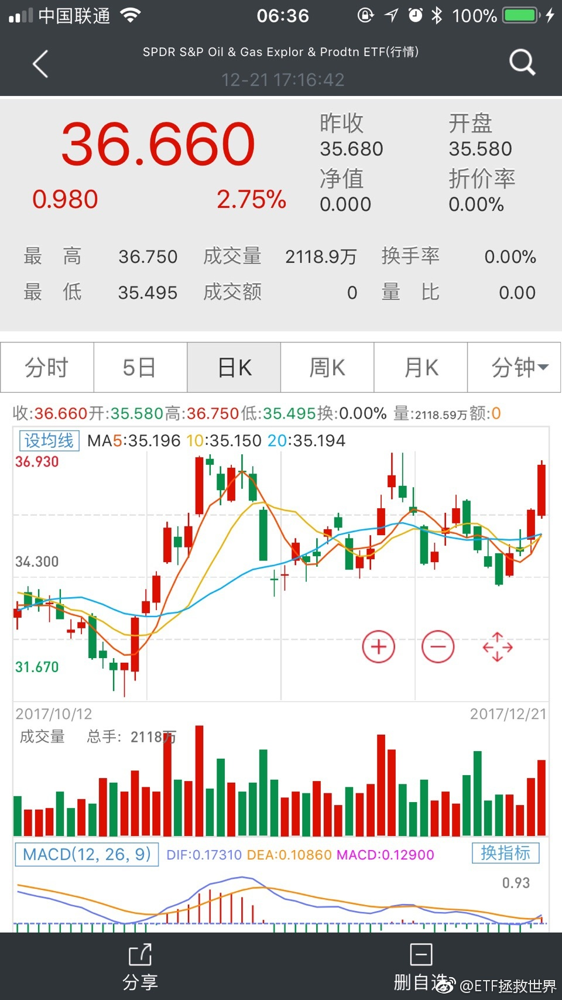

回复@linsuozhang2009:中文网路上当然是我的最准，还用说吗。//@linsuozhang2009:回复@卢泽森Samuel:每个大V和且慢的估值算法不见得一样，都只是为了自己的投资体系服务，没有谁对谁错或者准不准确的问题@ETF拯救世界:8848获利筹码只剩55%了。这个股票换手虽然低，但是在高位几个月了，基本上接盘的都吃饱了。。。
10年期债主力T1803收涨0.40%，创近10月27日以来新高新高；5年期债主力TF1803涨0.22%，创10月26日新高。国泰君安表示，中短期来看，目前长端利率水平已经充分透支了利空预期，随着未来1-2个季度名义GDP回落、对监管恐慌的平抑，债市大概率将会迎来一轮级别比较大的熊市反弹，10年国债和国开收益率有望回落至3.7%和4.5%以下。
回复@Maggie的夏至:就当历史书看吧……怎么投资上面没有，只是告诉你那个金融危机发生了什么。//@Maggie的夏至:正要补充书呢看到你雪球上发的《大而不倒》。好看吗？推荐不@ETF拯救世界:$全指医药 sh000991$ 风是不是吹到医药了。
回复@观海听山:今年基金超级低配医药股。就这样医药好歹今年也没跌，当然涨幅和沪深300没法比。我坚定看好这个行业。长期的看好。//@观海听山:除了那几个龙头，其它大多数医药股还是不行@ETF拯救世界:$全指医药 sh000991$ 风是不是吹到医药了。
回复@诸葛不亮_若如初见:给咱们抬轿子？？？//@诸葛不亮_若如初见:雪球公众号已经快一个月连续推医药了，还有我关注的别的财经类，平均两天一篇推荐医药股和医药指数的文章@ETF拯救世界:$全指医药 sh000991$ 风是不是吹到医药了。
回复@April·D·S:品种很多。各国etf、各种久期的国债etf，reits，tips。总能挖出来能买的。//@April·D·S:回复@ETF拯救世界: 钱又要回一部分到雪盈了，之前在投机做空，好不容易决定不做空了，回归A股了，E大要做美股ETF了 但美股目前高估中，E大也只是研究还不会买对吧?@ETF拯救世界:有波动就有利润，提款机 
 //@linsuozhang2009:回复@卢泽森Samuel:每个大V和且慢的估值算法不见得一样，都只是为了自己的投资体系服务，没有谁对谁错或者准不准确的问题
//@linsuozhang2009:回复@卢泽森Samuel:每个大V和且慢的估值算法不见得一样，都只是为了自己的投资体系服务，没有谁对谁错或者准不准确的问题